御朱印帳のある休日
御朱印帳を持って、
ちょっとお出かけ。
御朱印めぐりへ ようこそ
はじめての御朱印は、ちょっと分からないこともあるもの。
御朱印のいただき方や御朱印帳の使い方から、お参りの行き帰りの楽しみまで。
自分のペースで、ひとつずつ楽しんでみませんか。
まずは 御朱印の基本から ↓
01｜はじめの一冊
御朱印帳を買ったら、最初にどこへ行く？
最初の一歩は、身近な神社やお寺から。
有名な場所をいくつも巡らなくても大丈夫。前から気になっていた神社や、散歩の途中で見かけたお寺から始めてみませんか。御朱印帳は、参拝した場所や日付を一冊ずつ重ねていけるものです。
御朱印をいただくことも楽しみですが、まずはその場所で静かに手を合わせる時間を大切に。境内を歩いてみると、木々の表情や建物の細部にも目が向くかもしれません。

はじめての御朱印のいただき方
神社なら鳥居の前で一礼し、案内に従って参道を進みます。手水の設備が使えるときは手を清め、拝殿でお参りを。神社では一般に二拝二拍手一拝ですが、お寺の参拝方法や各寺社の案内はそれぞれ大切にしましょう。
- まずはお参りをする
御朱印は神社やお寺にお参りした証としていただくもの。最初に参拝を済ませましょう。 - 受付の案内を確認する
神社なら授与所や社務所、お寺なら納経所など。受付時間や直書き・書き置きの対応は場所によって違います。 - 御朱印帳を開いて渡す
直接書いていただける場合は、希望のページを開いて丁寧に渡します。書いていただく間は静かに待ちましょう。
初穂料・納経料や受付方法は訪問先によって異なるので、事前に公式案内を確認し、現地の案内を優先してください。
御朱印帳は、どう使うの？
御朱印帳は、参拝した証を一冊に重ねていく帳面です。蛇腹式のものが多く、使い方はそれほど難しくありません。
お参りを済ませたら、書いていただきたいページを開いて受付へ。どこを開けばよいか迷ったら、受付の方に聞いてみましょう。
書き置きの御朱印をいただいたら
あらかじめ紙に書かれた「書き置き」の御朱印をいただくこともあります。
そんなときは、大判の御朱印帳と同じくらいの大きさの、小型の書き置き用クリアファイルがあると便利です。
御朱印のサイズを確かめて選べば、折れや汚れを防いで持ち帰り、あとから御朱印帳に貼ったり、ファイルに残したりできます。
御朱印の基本が分かったら、次はお参りの日そのものを楽しんでみませんか。参道の景色や季節の花、帰り道の寄り道にも、小さな楽しみがあります。
次へ｜休日の寄り道を楽しむ ↓御朱印についての参考資料
02｜休日の寄り道
今週末、御朱印帳を持って出かけるなら
御朱印帳を持って出かける日。お参りの前後にも、好きな時間があります。
休日の朝、気になっていた神社やお寺をひとつ選ぶ。たくさん巡る予定を立てなくても、今日はこの場所に行ってみようと思うだけで、出かける理由ができます。
参拝を終えたら、少し歩いてみませんか。電車を一駅手前で降りたり、いつもと違う道を通ったり。春の花、夏の木陰、秋の色づいた葉、冬の澄んだ空気。季節が変わると同じ道でも違う景色に出会います。
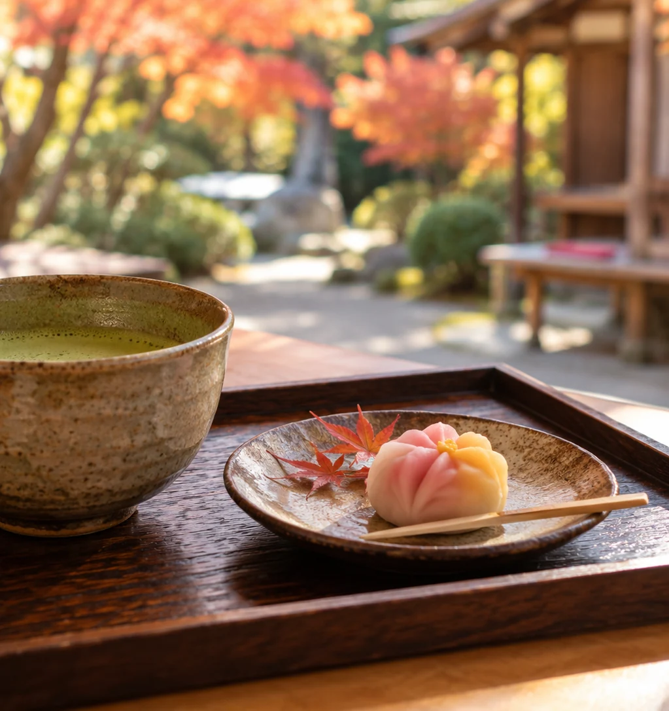
帰り道まで、ひとつの休日
お参りのあとは、気になっていた甘味処でひと休み。商店街を歩きながら、地元のお菓子を見つけるのも楽しみです。誰かと一緒でも、ひとりで気ままに歩いても。その日の気分で寄り道を選べます。
参道で見つけた花や、帰り道に食べたもの。写真を撮るときは、境内の撮影案内や周りの参拝者に配慮しながら、心に残った景色を少しだけ。
帰ってから思い出すのは、御朱印そのものだけではなく、歩いた道や、思いがけず立ち寄ったお店だったりします。
そんな休日を、もう少し気持ちよくしてくれる持ち物があります。特別な準備は要りません。いつものバッグに少しだけ。
03｜持ち歩く楽しみ
出かける準備も、楽しみのひとつ
御朱印帳に加えて、いつものバッグに少しだけ。
歩く距離や天気を確かめて、靴を選ぶ。御朱印帳をしまい、お財布とスマホを忘れずに。出かける前のちょっとした準備も、休日の気分をつくってくれます。
あると便利な、小さな持ち物
- 小銭と現金初穂料・納経料に備えて。金額や支払い方法は訪問先の案内で確認しましょう。
- 小型の書き置き用クリアファイル書き置きの御朱印のサイズに合うものを。折らずに持ち帰るために。
- 歩きやすい靴、ハンカチ、飲み物参道や坂道を歩く日も、無理をせず自分のペースで楽しめるように。
- スマホと少しの空き容量道や受付時間の確認に。撮影できる場所では、花や景色も一枚。
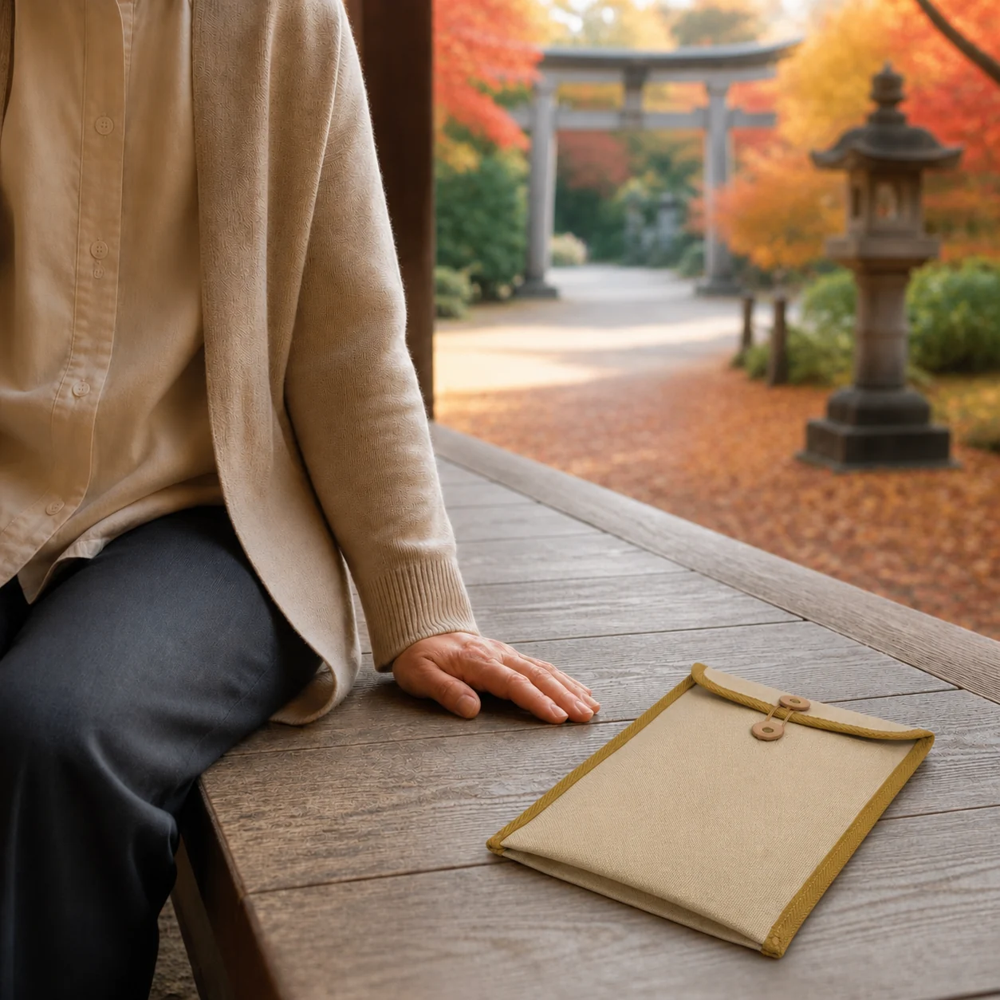
御朱印帳も、書き置きの御朱印も
御朱印帳と、書き置き用の小さなファイル。大判の御朱印帳と同じくらいの大きさなら、持ち物をまとめやすくなります。
御朱印帳は、そのままバッグに入れてもかまいません。けれど、お気に入りのケースがあれば、次のお参りへ持って出かける楽しみが、もうひとつ増えそうです。
お気に入りの一冊に、好きな居場所を
「わたしのつづり帖」の御朱印帳ケースは、帆布のやさしい風合いと丸みのある形。底にはマチを設け、玉紐ボタンで留めるつくりです。
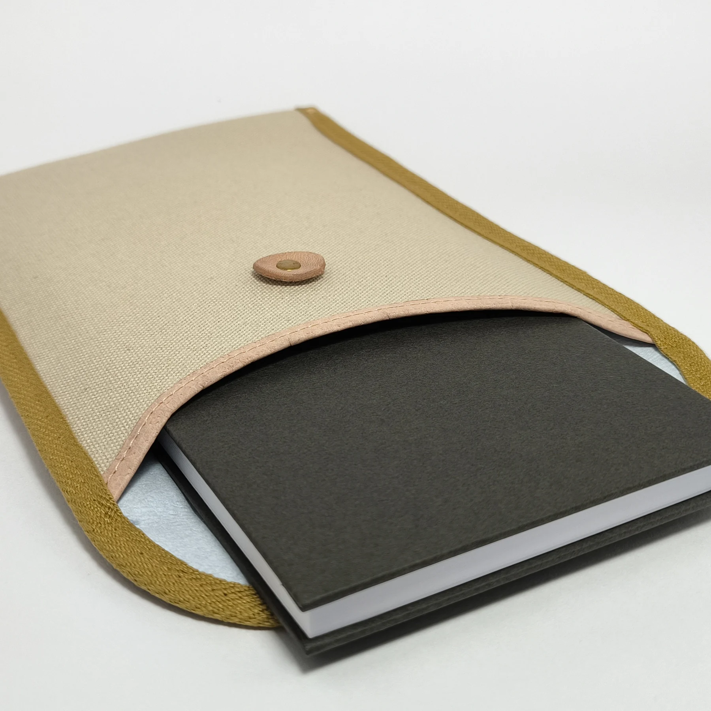
道具を全部そろえる必要はありません。好きなものをひとつ持つだけでも、出かける気分が少し変わります。
御朱印帳ケースの4色を見る
御朱印帳の表紙やいつものバッグに合わせて、好きな色を選ぶ楽しみも。
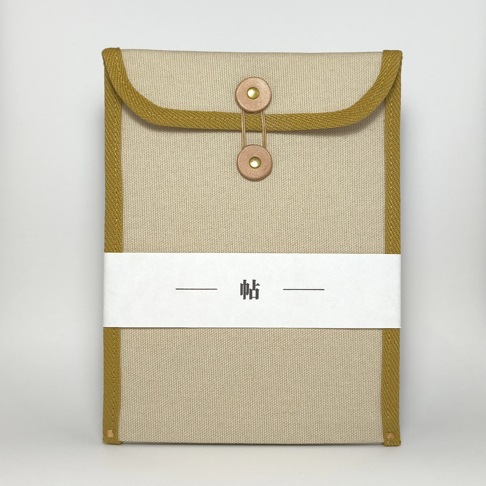
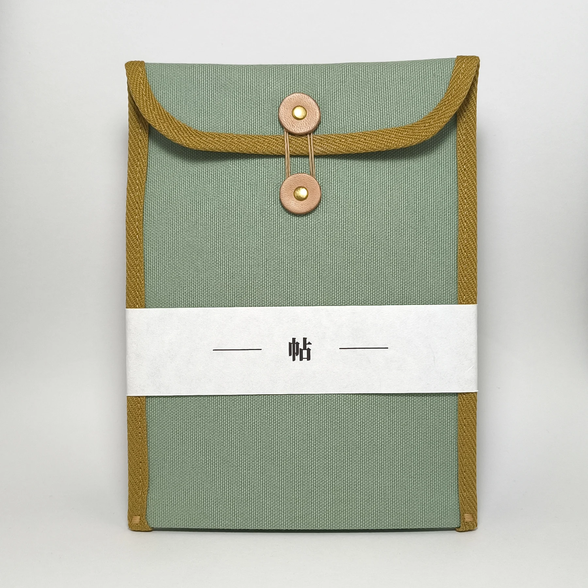
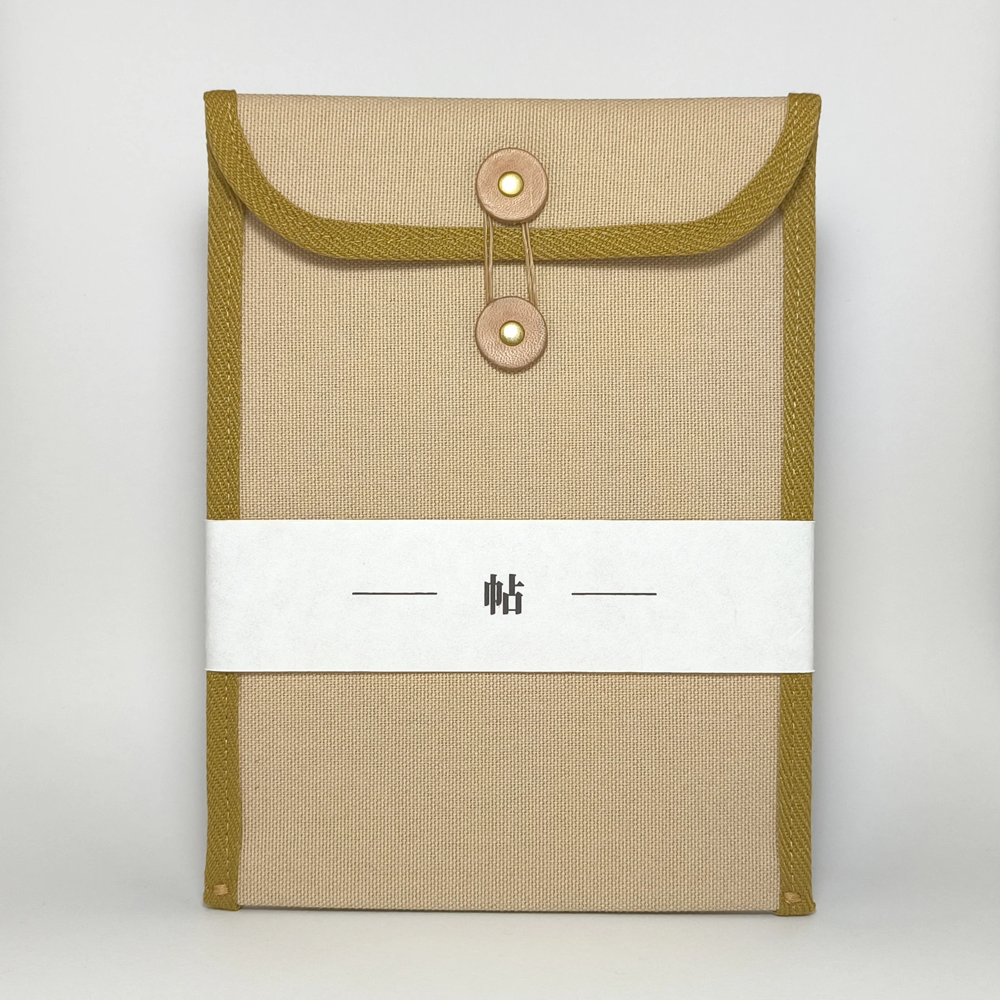
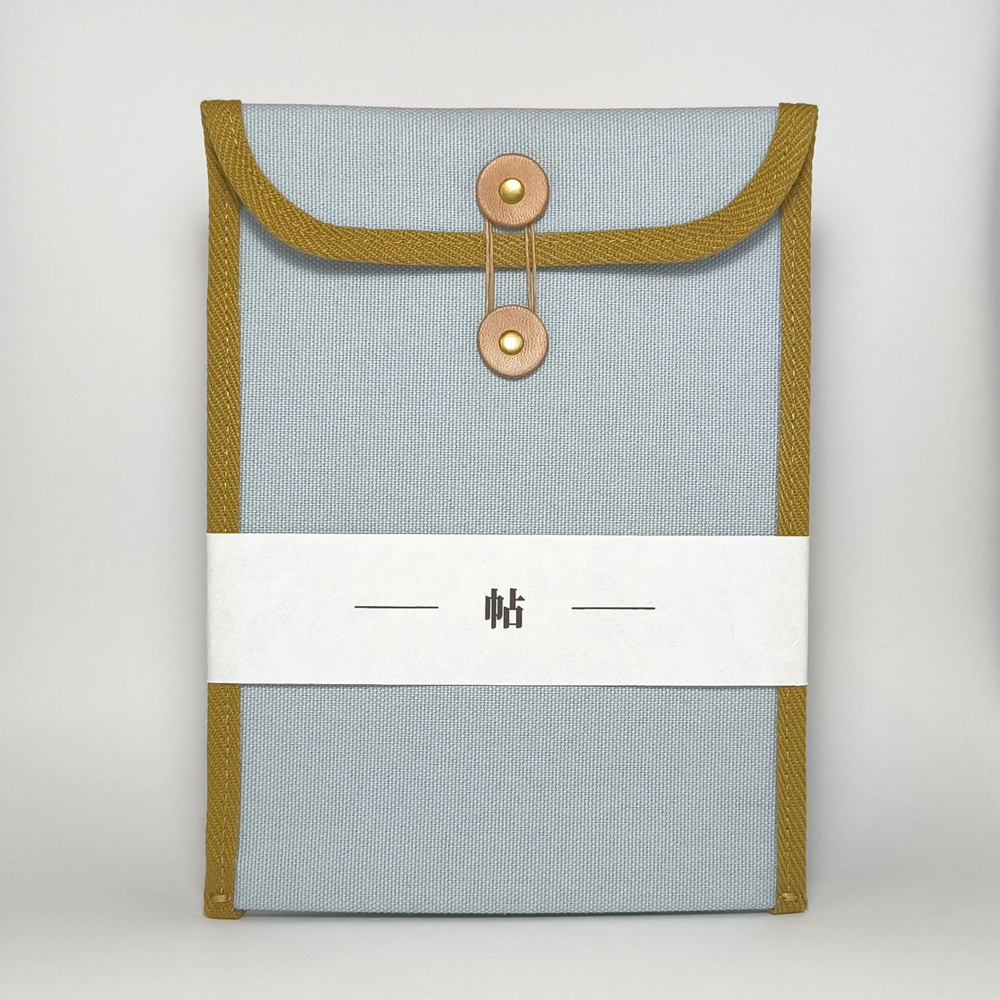
準備して、出かけて、お参りして、寄り道をする。その日が終わったあとにも、もうひとつ楽しみが残ります。
04｜あの日を残す
御朱印帳には残らない、あの日のこと
御朱印帳には御朱印が、写真にはその日の景色が残ります。
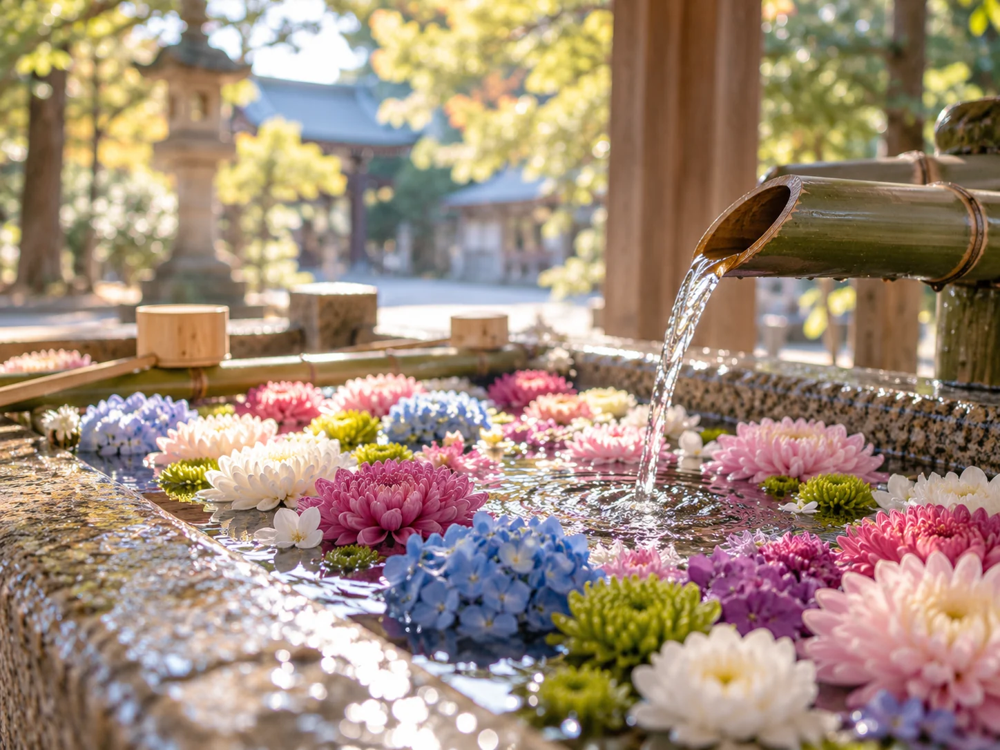
御朱印帳には、その日にいただいた御朱印が残ります。ページを開けば、訪れた場所や日付を思い出せます。
同じ日、スマホには参道の緑や帰り道のお茶、途中で出会った花の写真が残っているかもしれません。
写真に写っていないもの
けれど、写真を撮ったときに何を感じたかは、時間がたつと忘れてしまうことがあります。
「風が気持ちよかった」「少し遠回りしてよかった」。そんなひとことを写真に添えておくと、あとで見返したとき、景色と一緒にその日の気持ちも思い出せます。
お参りした日の、もうひとつの帖
御朱印帳の代わりではありません。お参りした日の写真と、そのときの気持ちを、自分のペースで残す小さな帖があってもよさそうです。御朱印の細かな管理や、毎日の長い日記も必要ありません。
そんな残し方を形にしたのが、「わたしのつづり帖｜御朱印」です。
使い方は3ステップ
- 01写真を追加する
- 02ひとこと添える
- 03あとから見返す
残したい写真を、自分で選んで追加します。
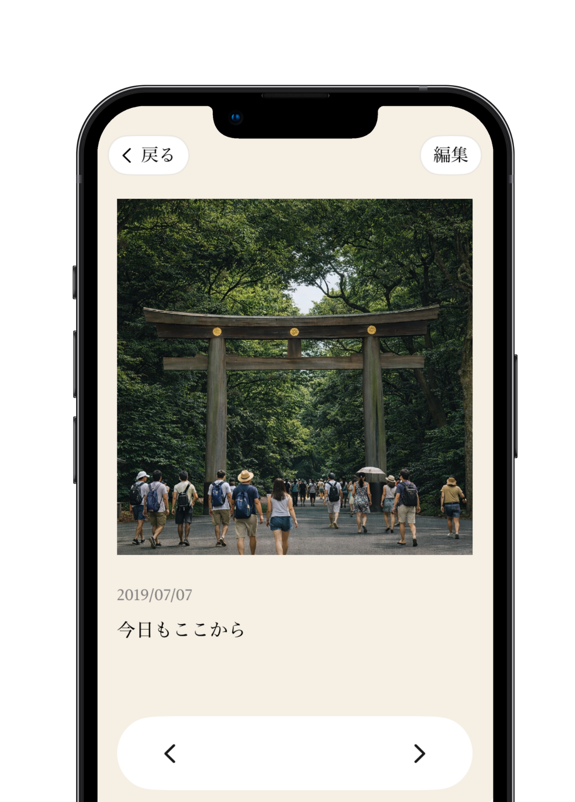
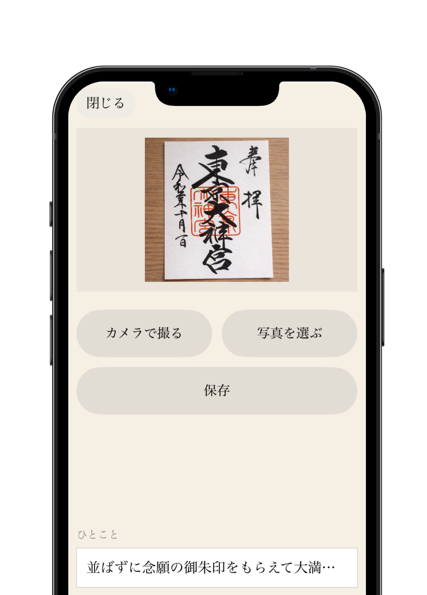
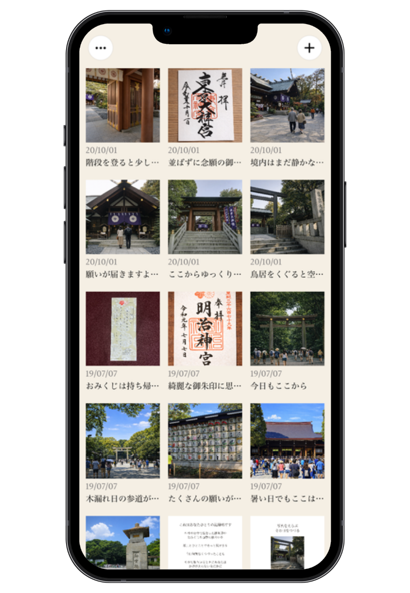
次のお参りは来週でも半年先でも。好きなときに残した写真を、あとから開く楽しみです。
わたしのつづり帖｜御朱印
お参りした日の思い出を、あとから楽しむ記録帖。
iPhone向け・400円買い切り。登録・ログイン不要、広告なし、月額課金なし。記録は端末内に保存します。
App Storeで画面と詳細を見る ↗